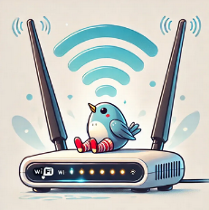

Решение проблемы обхода блокировок для всех устройств в домашней сети зачастую упирается в дешевый, древний, но исправно выполняющий свое предназначение роутер. В этой статье я расскажу, как настроить связку ByeDPI и Redsocks на роутере с OpenWRT, даже если ваш девайс далеко не топ по характеристикам.

Однако эта информация будет полезна и обладателям более современных роутеров — метод довольно универсален и относительно несложен в настройке.
Прежде чем перейти к основной части, коротко расскажу о существующих методах обхода систем DPI (Deep Packet Inspection), которые используются для фильтрации интернет-трафика.
Из плюсов: присутствует автоматический поиск рабочей конфигурации для обхода, который, правда, далеко не всегда работает.
Из минусов: требует установки кучи зависимостей и довольно сложен в конфигурировании.
ByeDPI — это утилита (не путать с приложением под Андроид) для обхода DPI (Deep Packet Inspection), которая изменяет сетевые пакеты таким образом, чтобы они не распознавались системами фильтрации трафика.
Но ByeDPI поднимает только SOCKS5 сервер, и чтобы пустить трафик через него, необходимо настроить прокси в каждом конкретном приложении.
К сожалению, VPN туннель реализован только в приложении ByeDPI под Андроид (и его более быстроразвивающемся на данный момент форке ByeByeDPI).
Redsocks — это прокси-инструмент, который перенаправляет трафик через SOCKS или HTTP прокси, даже если приложение не поддерживает настройку прокси напрямую.
Сочетание этих двух инструментов на роутере позволяет обходить блокировки на уровне роутера, обеспечивая свободу в домашней сети без необходимости установки ПО на каждом устройстве.
Здесь кратко опишу процесс усановки OpenWRT на роутер ASUS RT-N12 VP B1, если на вашем роутере уже стоит OpenWRT можете смело переходить к следующему разделу.
Вообще установка OpenWRT на роутер ASUS RT-N12 довольно тривиальна и подробно описана здесь и здесь, подсвечу лишь несколько моментов:
Способ 1:
Но, у меня ASUS Firmware Restoration категорически отказывалась находить роутер, а также в режиме восстановления по адресу 192.168.1.1 ничего не было, так что пришлось использовать второй способ, для которого нужно включить доступ по SSH в настройках роутера.
Способ 2:
В терминале в папке с скачанным и разархивированным файлом прошивки выполняем команды:
scp openwrt-19.07.4-rt-n12vp_b1-mwan3-squashfs-sysupgrade.bin root@192.168.1.1:/tmp
ssh root@192.168.1.1
cd /tmp
mtd-unlock -d linux
mtd-write -i openwrt-19.07.4-rt-n12vp_b1-mwan3-squashfs-sysupgrade.bin -d linux
rm openwrt-19.07.4-rt-n12vp_b1-mwan3-squashfs-sysupgrade.bin
reboot
Для начала нужно скачать подходящий для вашей версии OpenWRT пакет ByeDPI отсюда.
Закидываем его в папку tmp через консоль (scp) или с помощью программы WinSCP:
scp .\byedpi_0.14.1-1_mipsel_24kc.ipk root@192.168.1.1:/tmp
Логинимся по SSH:
ssh root@192.168.1.1
Если позволяет место, устанавливаем опциональные пакеты для более быстрой установки и проверки работы:
opkg update
opkg install coreutils-sort curl grep gzip
Пробуем установить Redsocks с помощью скрипта следующей командой:
cd /tmp && wget https://github.com/emonbhuiyan/Redsocks-OpenWRT/raw/main/install.sh && chmod +x install.sh && clear && sh install.sh && rm install.sh && clear
Если появилась ошибка wget error : SSL support not available, то нужно доустановить сертификаты командой:
opkg install libustream-mbedtls ca-bundle ca-certificates
Далее открываем конфиг Redsocks
vi /etc/redsocks.conf
И прописываем в нем следующие параметры
base {
log_debug = off;
log_info = on;
log = "syslog:local7";
daemon = on;
redirector = iptables;
}
redsocks {
local_ip = 0.0.0.0;
local_port = 1337;
ip = 127.0.0.1;
port = 1080;
type = socks5;
}
Перезпускаем и включаем сервис Redsocks
service redsocks restart
service redsocks enable
Устанавливаем ранее скачаный пакет ByeDPI
opkg install /tmp/byedpi_0.14.1-1_mipsel_24kc.ipk
Открываем конфиг ByeDPI:
vi /etc/config/byedpi
Здесь прописываем найденную на просторах интернета и подходящую для вашего провайдера конфигурацию обхода блокировок. Протестировать конфигурацию, перед тем как применить её здесь, можно с помощью приложения ByeDPIAndroid на телефоне.
config byedpi 'main'
option enabled 1
# if set, all other uci settings are ignored
option cmd_opts '--hosts /etc/config/byedpi.hosts'
Опция --hosts указывает файл со списком (потенциально) заблокированных доменов, к которым будет применяться обход DPI. Этот файл можно создать через WinSCP или командой:
vi /etc/config/byedpi.hosts
Содержимое файла примерно такое
####Список доменных имен для обхода ограничений
### YouTube
youtube.com
youtu.be
ggpht.com
ytimg.com
i.ytimg.com
i9.ytimg.com
yt3.ggpht.com
l.google.com
play.google.com
youtubei.googleapis.com
wide-youtube.l.google.com
nhacmp3youtube.com
googleusercontent.com
yt3.googleusercontent.com
googleapis.com
googlevideo.com
youtubei.googleapis.com
1e100.net
###Google google.com
mtalk.google.com
manifests.googlevideo.com
googleapis.com
youtube.googleapis.com
gmailpostmastertools.googleapis.com
NS1.google.com
NS2.google.com
NS3.google.com
NS4.google.com
play.google.com
gstatic.com
googleads.g.doubleclick.net
###Новостные и погодные сервисы
msnbc.com
foxnews.com
cnn.com
dw.com
bbc.com
bbc.com/weather
bbc.co.uk
bbc.co.uk/weather
static.files.bbci.co.uk
mybbc-analytics.files.bbci.co.uk
weather.files.bbci.co.uk
nav.files.bbci.co.uk
m.files.bbci.co.uk
inforesist.org
france24.com
accuweather.com
meteoblue.com
open-meteo.com
openweathermap.org
weatherstack.com
worldweatheronline.com
wunderground.com
currenttime.tv
###Мессенджеры
whatsapp.com
whatsapp.net
static.whatsapp.net
g.whatsapp.net
time.android.com
web.whatsapp.com
signal.org
getsession.org
amazon.com
amazonaws.com
###Социальные сети
facebook.com
x.com
twitter.com
instagram.com
###Торрент-трекеры
rutracker.org
rutor.info
rutor.is
mega-tor.org
kinozal.tv
#nnm-club.me
#nnm-club.ws
#tfile.me
#tfile-home.org
#tfile1.cc
#megatfile.cc
#megapeer.org
#megapeer.ru
tapochek.net
#tparser.org
#tparser.me
rustorka.com
#uniongang.tv
fast-torrent.ru
###Каталоги медиаконтента для программ
rezka.ag
hdrezka.ag
hdrezka.me
filmix.co
filmix.cc
seasonvar.ru
###Книги
lib.rus.ec
flibusta.is
flibs.me
flisland.net
flibusta.site
###Разное
7-zip.org
edem.tv
msfree.su
4pda.to
protonvpn.com
proton.me
drive.proton.me
tuta.com
whois.domaintools.com
dnsleaktest.com
ipleak.net
github.com
objects.githubusercontent.com
openvpn.net
community.openvpn.net
openwrt.org
lastpass.com
delinea.com
dnscheck.tools
cloudflare.com
cloudflare-dns.com
1dot1dot1dot1.cloudflare-dns.com
controld.com
umbrella.com
cisco.com
quad9.net
deb.oxen.io
ntc.party
akamaitechnologies.com
deploy.static.akamaitechnologies.com
akamaistream.net
AX0.AKAMAISTREAM.NET
AX1.AKAMAISTREAM.NET
AX2.AKAMAISTREAM.NET
AX3.AKAMAISTREAM.NET
NS2-32.AKAMAISTREAM.NET
NS3-32.AKAMAISTREAM.NET
NS6-32.AKAMAISTREAM.NET
P5.AKAMAISTREAM.NET
P6.AKAMAISTREAM.NET
P7.AKAMAISTREAM.NET
P8.AKAMAISTREAM.NET
149.34.0.0/16
cloudfront.net
datapacket.com
wholesale.adamo.es
###Ubuntu и форки ubuntu.com
archive.ubuntu.com
linuxmint.com
packages.linuxmint.com
tuxedocomputers.com
os.tuxedocomputers.com
mirror.init7.net
kde.org
ubuntucinnamon.org
23.192.0.0/11
23.128.64.0/23
###Проверка Tor
check.torproject.org
Перезпускаем и включаем сервис ByeDPI
service byedpi restart
service byedpi enable
Проверить результат можно с помощью тестирования скорости загрузки домена googlevideo.com
curl --connect-to ::speedtest.selectel.ru https://manifest.googlevideo.com/100MB -k -o/dev/null